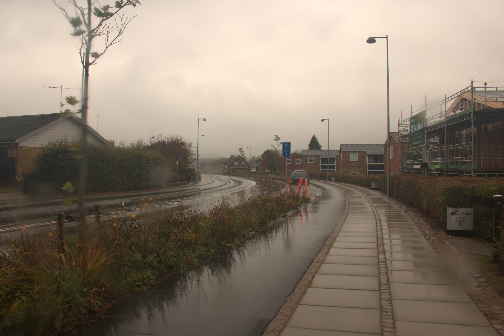
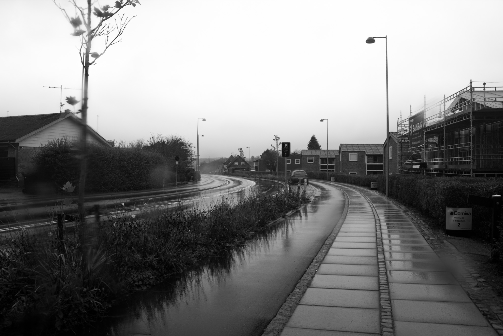
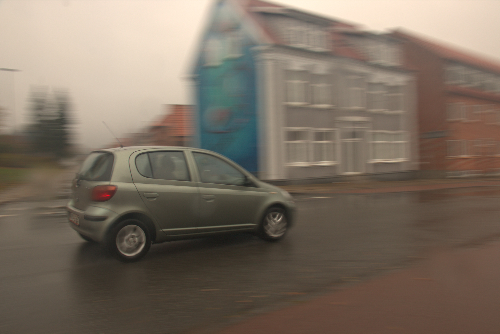
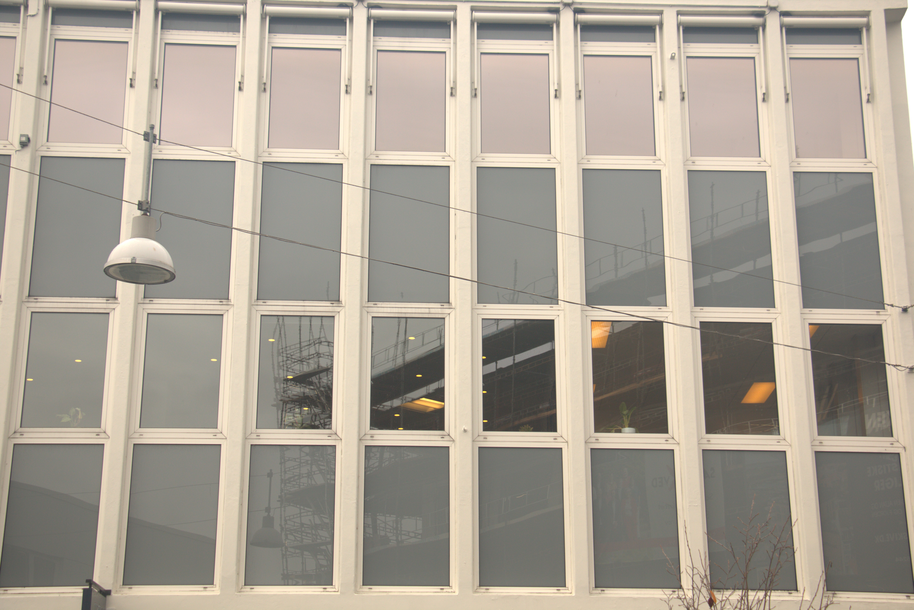
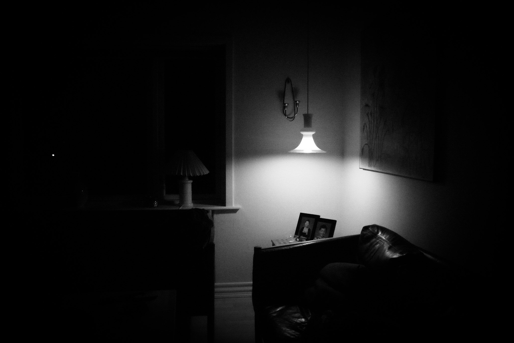
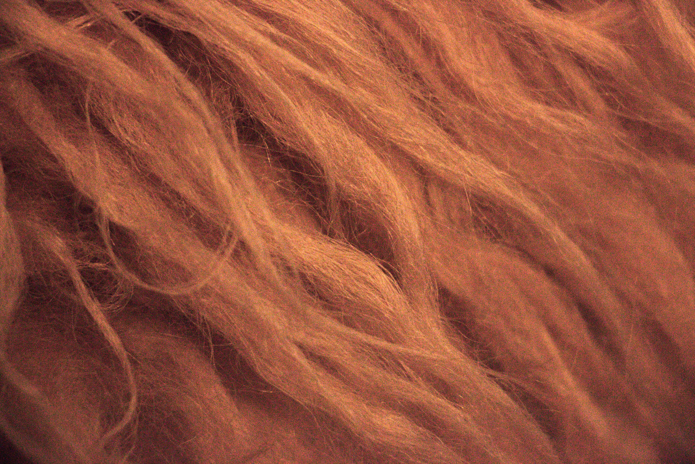

Leading lines.
I denne opgave skal den bærende komposition i billedet være ledelinjer, som fører blikket ind i billedet.
Billedet skal være i sort/hvid.




Leading lines.
I denne opgave skal den bærende komposition i billedet være ledelinjer, som fører blikket ind i billedet.
Billedet skal være i sort/hvid.


Rule og thirds
Et godt billede i denne kategori anvender kompositionsreglen Rule of Thirds.
Billedet skal være i sort/hvid.


Farve
I denne delopgave skulle vi arbejde med farve som det primære virkemiddel.
Billedet skal være i hvid.


Kontrast - farver
I denne delopgave skulle vi også arbejde med kontrast, men her er det ikke så meget kontrast mellem lyst og skygge som kontrast mellem farver.
Billedet skal være i hvid.


Symetri
I denne delopgave skal vi tage et billede hvor symmetri er et bærende kompositionselement.
Billedet skulle være i sort/hvid.


kontrast - sort/hvid
I denne opgave skulle vi arbejde med kontrast, som kontrast mellem lys og skygge.
Billedet skulle være i sort/hvid.


Tekstur
I denne opgave skulle vi vise tekstur. Billedet kan være i sort/hvid eller farve efter eget valg.


Form
I denne delopgave skulle vi anvende form som den styrende faktor. Det kan være i det små, helt tæt på, eller i det større, lidt på afstand. Billedet skal være i sort/hvid